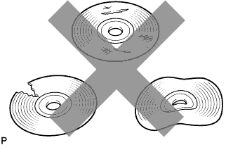

DTC B15E1 Неисправность носителя |
| Код DTC | Условие обнаружения DTC | Неисправный участок |
| B15E1 | При выполнении одного из следующих условий:
|
|
| 1.ПРОВЕРЬТЕ ДИСК |
|  |
Убедитесь в том, что диск не деформирован и не треснут.
|
| ||||
| OK | |
| 2.ОЧИСТКА ДИСКА |
 |
Очистка диска
Если поверхность диска загрязнена, протрите диск мягкой тканью от центра к краю в радиальном направлении.
| ДАЛЕЕ | |
| 3.ВСТАВЬТЕ ДРУГОЙ КОМПАКТ-ДИСК И ПОВТОРИТЕ ПРОВЕРКУ |
Вставьте другой компакт-диск и повторите проверку.
Сбросьте DTC (Нажмите здесь).
Проверьте наличие кода DTC и убедитесь, что эта неисправность не проявляется снова.
|
| ||||
| OK | ||
| ||